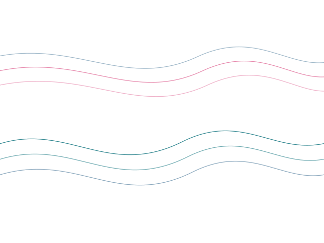
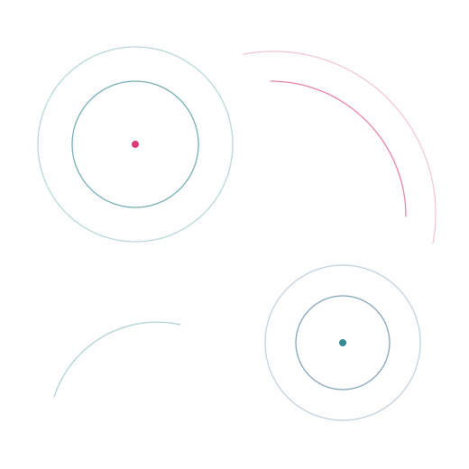
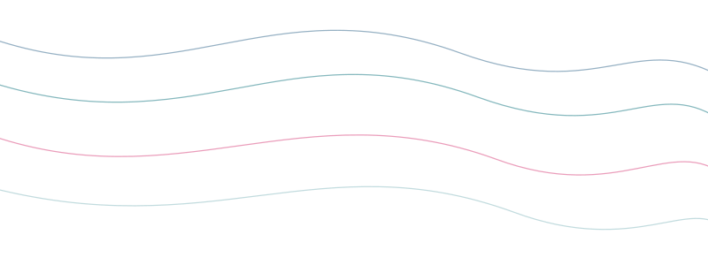
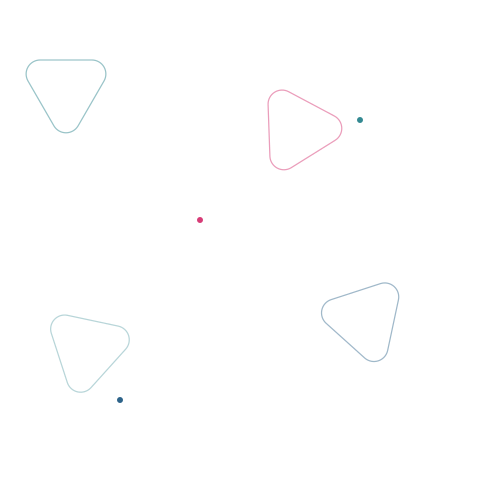
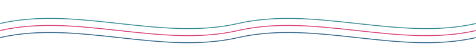

Decor SVGs — brand shades, logo-derived shapes

bg-contours.svg (abstract bg)

bg-orbit-field.svg (abstract bg)

bg-drift.svg (abstract bg)

bg-lattice.svg (abstract bg)
swoosh-rose.svg
swoosh-teal.svg
swoosh-blue.svg
tri-orbits.svg
ring-trio.svg
arc-stack.svg
dot-triangle.svg
petal-fan.svg
divider-spark.svg
underline-rose.svg

wave-lines.svg
quote-swoosh.svg